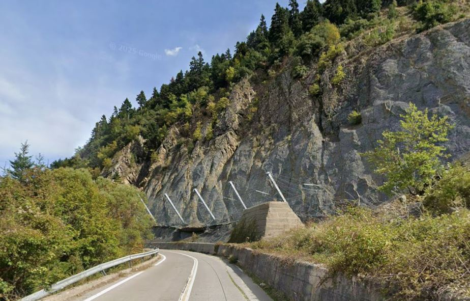

Όπου το έδαφος συναντά την κατασκευή
Εξειδικευμένες γεωτεχνικές, στατικές και υδραυλικές μελέτες για έργα υποδομής πολιτικού μηχανικού — με 24+ χρόνια εμπειρίας στην αλληλεπίδραση εδάφους – κατασκευής.
Πολιτικός Μηχανικός M.Sc. με εξειδίκευση στη Γεωτεχνική & Υδραυλική Μηχανική
Μόνιμη συνεργασία με μηχανικούς άλλων ειδικοτήτων, γεωλόγο και κατασκευαστικές εταιρείες για να μετατρέπονται σύνθετα γεωτεχνικά προβλήματα σε τεχνικοοικονομικά ασφαλείς και υλοποιήσιμες μελέτες
Η εξειδίκευσή μου επικεντρώνεται στην αλληλεπίδραση εδάφους–κατασκευής, έναν τομέα όπου η ανάλυση απαιτεί συνδυασμό εμπειρίας, επί-τόπου ερευνών, εργαστηριακών δοκιμών γεωυλικών και αξιόπιστων αριθμητικών προσομοιώσεων. Από το 2002 έχω συμβάλει σε έργα κάθε κλίμακας στην Ελλάδα και το εξωτερικό, από ιδιωτικές κατοικίες έως δημόσια έργα υποδομής.
Παρέχεται επιτόπου υποστήριξη και κατά την υλοποίηση του έργου, όταν οι συνθήκες πεδίου διαφέρουν από αυτές της μελέτης ή απαιτείται γρήγορη λήψη απόφασης κατά τη διάρκεια της κατασκευής σε δύσκολες εδαφικές συνθήκες.
- 2002 Διπλωματούχος Πολιτικός Μηχανικός, Πανεπιστήμιο Πατρών.
- 2004 Μεταπτυχιακό Δίπλωμα Ειδίκευσης σε Έργα Υποδομής Πολιτικού Μηχανικού. Εξειδίκευση σε Γεωτεχνική Μηχανική & Υδραυλική Μηχανική.
-
2018 – 2025
Προϊστάμενος Τμήματος Μελετών Έργων
Δ/νση Ύδρευσης, ΔΕΥΑ Πάτρας. -
2004 – Σήμερα
Εξειδίκευση σε Γεωτεχνικά Έργα
Μελέτες και Υπηρεσίες για ιδιώτες, μηχανικούς και κατασκευαστικές εταιρείες.
Tομείς εξειδικευμένης παροχής
Από τη φάση της προμελέτης μέχρι την επιτόπου επίβλεψη — υπηρεσίες που εκπονούνται με χρήση κατάλληλων λογισμικών και βασίζονται σε επιτόπου έρευνα.
-
01
Συμβουλευτική
Υποστήριξη σε έργα υποδομής όπου το έδαφος απαιτεί εξειδικευμένη γνώση. Ανάλυση κινδύνου, εκτίμηση εναλλακτικών λύσεων και τεκμηριωμένες προτάσεις προς μελετητές, εργολάβους και Υπηρεσίες.
-
02
Γεωτεχνική έρευνα
Διάνοιξη ερευνητικών δειγματοληπτικών γεωτρήσεων, φρεάτων, εκτέλεση επιτόπου δοκιμών αντοχής, διαπερατότητας και χαρακτηρισμού του εδάφους. Λήψη αντιπροσωπευτικών δειγμάτων για εργαστηριακές δοκιμές σε συνεργαζόμενα πιστοποιημένα εργαστήρια εδαφομηχανικής/βραχομηχανικής.
-
03
Γεωφυσικές δοκιμές
Εφαρμογή μη καταστροφικών ερευνητικών μεθόδων επιφανειακών κυμάτων MASW και ReMi για τον προσδιορισμό της κατανομής Vs-depth profile, της κατηγορίας εδάφους θεμελίωσης και του ελαστικού φάσματος απόκρισης κατά EC-8.
-
04
Υποβρύχια αυτοψία
Υποβρύχια επισκόπηση λιμενικών έργων, τεκμηρίωση διαστάσεων υφιστάμενων και νέων κατασκευών, φωτογραφική και βιντεοσκοπική τεκμηρίωση, τεχνική έκθεση αυτοψίας. Υποστήριξη βυθομετρικής αποτύπωσης με sonar και συμβατικές μεθόδους σε λιμενικά έργα.
-
05
Μελέτες
Εξειδικευμένες Γεωτεχνικές Μελέτες θεμελίωσης κατασκευών, αντιστήριξης εδάφους, ευστάθειας πρανών και αποκατάστασης κατολισθήσεων, βραχοπτώσεων, στατικών μελέτων διαστασιολόγησης και όπλισης έργων αντιστήριξης, καθώς και μελέτες υδραυλικών δικτύων, με χρήση κατάλληλων λογισμικών.
-
06
Υποστήριξη έργων
Επιτόπου υποστήριξη μετά τη σύνταξη της μελέτης, εκτίμηση κατάστασης σε δύσκολες εδαφικές συνθήκες και καθοδήγηση κατασκευαστικής διαδικασίας.
Εργαλεία ανάλυσης και πεδίου
Χρήση επαγγελματικών λογισμικών ανάλυσης και εξοπλισμού επι-τόπου δοκιμών και έρευνας που υποστηρίζουν τις μελέτες.
Λογισμικό Πεπερασμένων στοιχείων για αναλύσεις συμπεριφοράς εδάφους - κατασκευής. Υπολογισμός επιτρεπόμενων φορτίων και αναμενόμενων καθιζήσεων, υπολογισμός συντελεστών ασφάλειας.
Προσομοίωση καταπτώσεων βράχων: ανάλυση & διαστασιολόγηση τεχνικών έργων ανάσχεσης βραχοπτώσεων.
Υδραυλική ανάλυση δικτύων ύδρευσης: υπολογισμός παροχών/πιέσεων, διαστασιολόγηση σωληνώσεων και απαιτούμενων εξαρτημάτων.
Εξοπλισμός για την εφαρμογή της μεθόδου επιφανειακών κυμάτων για τον προσδιορισμό του Vs-depth profile.
Ενδεικτικές Μελέτες - Έργα
Επιλεγμένα παραδείγματα της προσέγγισης: από την αξιολόγηση και έρευνα πεδίου στη μελέτη, σύνταξη τευχών δημοπράτησης και στην επιτόπου υλοποίηση.


Ας μιλήσουμε για το έργο σας
Για προσφορά, διερευνητική συζήτηση ή τεχνική γνωμοδότηση — επικοινωνήστε απευθείας ή μέσω της φόρμας.
- vvlach@gmail.com
- Τηλέφωνο
- +30 2615 502525
- Έδρα
- Φιλοποίμενος 56, Πάτρα, Ελλάδα